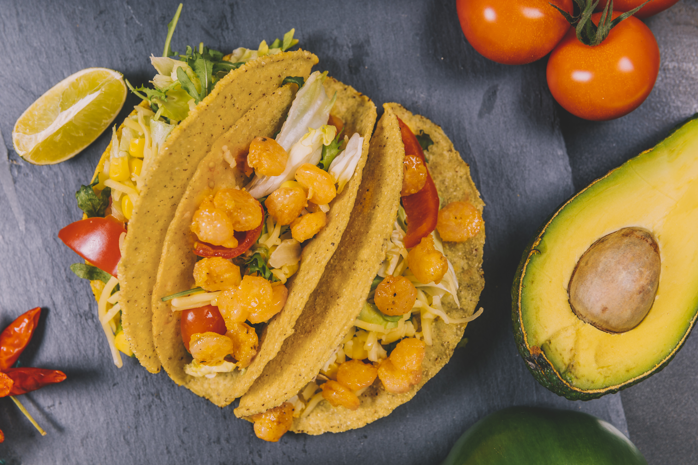

Homepage
Pumpkin Tacos

Designed by Magnific
Description
Pumpkin tacos are an alternative twist on traditional tacos, using cubed roasted pumpkin as the main filling instead of the usual meat. Pumpkin has a sweet earthy taste to it which goes well with smoky spices. When pumpkin is cooked right the edges can get caramelized while the inside becomes tender and creamy.
Ingredients
- 2 tablespoons vegetable oil
- 2 cups cubed fresh pumpkin
- ½ cup vegetable stock
- 1 tablespoon ground cumin
- salt and ground black pepper to taste
- 12 flour or corn tortillas, warmed
Steps
- Heat the oil in a large skillet over medium heat. Cook the pumpkin in the heated oil 2 to 3 minutes. Stir in the vegetable stock, cumin, salt, and pepper. Cook until the pumpkin cubes are easily pierced through with a fork, 5 to 7 minutes. Fill warm tortillas with pumpkin; top with tomato, onion, avocado, and cilantro as desired.